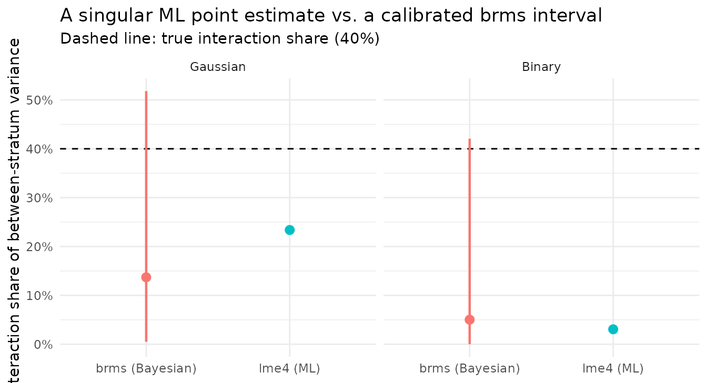

Bayesian MAIHDA for sparse intersections
Hamid Bulut
2026-07-09
Source:vignettes/bayesian_sparse_maihda.Rmd
bayesian_sparse_maihda.RmdSparse intersectional cells
Intersectional MAIHDA decomposes the between-stratum variation into an additive part (the constituent dimensions’ main effects) and an interaction part (the model-implied departure from additivity). That conclusion is defensible only when each intersectional stratum is populated well enough to estimate its effect. In practice it often is not. Crossing several dimensions multiplies the strata while the sample size stays fixed, so cell counts fall away quickly. Estimating an interaction variance from cells like these is hard.
A dataset with a known interaction
maihda_sparse_data is simulated for exactly that: 4
dimensions form 36 intersectional strata, and the interaction is
constructed to account for 40% of the between-stratum
variance – on a Gaussian outcome y and on the
latent scale of a binary outcome event. Individuals are
allocated to strata unevenly, reproducing the skewed cell sizes of real
survey data.
data(maihda_sparse_data)
d <- maihda_sparse_data
cells <- table(interaction(d$gender, d$ethnicity, d$education, d$age_group, drop = TRUE))
summary(as.numeric(cells)) # cell-size distribution
#> Min. 1st Qu. Median Mean 3rd Qu. Max.
#> 1.000 4.000 6.000 6.667 9.250 17.000
sum(cells < 5) # how many strata have < 5 people
#> [1] 12
attr(d, "truth")$gaussian$interaction_share # the true interaction share: 0.40
#> [1] 0.4A third of the strata hold fewer than five individuals. This is not an unusual case, as it is often the situation once more than two or three dimensions are crossed, and it is precisely where maximum likelihood becomes unreliable.
What lme4 reports
We fit the crossed-dimensions decomposition with
engine = "lme4" on both outcomes.
m_g <- maihda(y ~ 1 + (1 | gender:ethnicity:education:age_group),
data = d, decomposition = "crossed-dimensions", engine = "lme4")
m_b <- maihda(event ~ 1 + (1 | gender:ethnicity:education:age_group),
data = d, decomposition = "crossed-dimensions",
engine = "lme4", family = "binomial")
c(gaussian = m_g$decomposition$interaction_share,
binary = m_b$decomposition$interaction_share)
#> gaussian binary
#> 0.23380215 0.03061839
c(gaussian_singular = isTRUE(m_g$model$diagnostics$singular),
binary_singular = isTRUE(m_b$model$diagnostics$singular))
#> gaussian_singular binary_singular
#> TRUE TRUEBoth fits are singular: maximum likelihood has placed the interaction variance at the boundary. The Gaussian interaction share is pulled down to 23%, and the binary share to 3% – against a true 40%, the binary fit reports a substantial interaction as effectively absent. Crucially, neither estimate carries an interval. The estimate is not only biased but reported with unwarranted precision, because the model has no way to express how little the sparse cells determine.
What brms adds: posterior uncertainty
Refitting with engine = "brms" and a weakly-informative
prior on the random-effect standard deviations changes the output in one
important respect. The prior regularises the between-stratum standard
deviations away from the boundary (so the fit is not singular) and the
posterior yields a credible interval in place of a single number. The
call is shown but not evaluated here (brms requires Stan
and several minutes; see the note on precomputation below).
m_g_brms <- maihda(
y ~ 1 + (1 | gender:ethnicity:education:age_group),
data = d, decomposition = "crossed-dimensions", engine = "brms",
prior = brms::set_prior("normal(0, 0.5)", class = "sd"),
chains = 4, iter = 2000, warmup = 1000, cores = 4, seed = 1,
control = list(adapt_delta = 0.97)
)
m_g_brms$decomposition$interaction_share
m_g_brms$decomposition$interaction_share_ciThe cached posterior summaries:
bg <- pc$brms$gaussian; bb <- pc$brms$binary
data.frame(
outcome = c("Gaussian", "Binary"),
true_share = c(pc$truth$gaussian$interaction_share, pc$truth$binary_latent$interaction_share),
brms_share = c(bg$share, bb$share),
ci_low = c(bg$ci[1], bb$ci[1]),
ci_high = c(bg$ci[2], bb$ci[2]),
max_rhat = c(bg$diag$max_rhat, bb$diag$max_rhat),
divergences = c(bg$diag$divergences, bb$diag$divergences)
)
#> outcome true_share brms_share ci_low ci_high max_rhat divergences
#> 1 Gaussian 0.4 0.13704351 0.0050517071 0.5180674 1.004302 0
#> 2 Binary 0.4 0.05027529 0.0001234149 0.4206628 1.002563 0The posterior point remains low: the interaction is weakly identified
at this density, so brms does not recover the 40% either,
and we should not expect it to. The credible interval, however, runs
from near zero to past the true value, reflecting posterior uncertainty
about the interaction share. This is the substantive difference. Maximum
likelihood reported a singular point as if it were certain;
brms reports an interval that includes the true share in
this simulation and makes the uncertainty explicit. The diagnostics
(max_rhat close to 1, no divergent transitions) suggest the
posterior is well-sampled.
Comparison
fig <- data.frame(
outcome = factor(rep(c("Gaussian", "Binary"), each = 2), levels = c("Gaussian", "Binary")),
method = rep(c("lme4 (ML)", "brms (Bayesian)"), 2),
share = c(pc$lme4$gaussian$share, pc$brms$gaussian$share,
pc$lme4$binary$share, pc$brms$binary$share),
lo = c(NA, pc$brms$gaussian$ci[1], NA, pc$brms$binary$ci[1]),
hi = c(NA, pc$brms$gaussian$ci[2], NA, pc$brms$binary$ci[2])
)
truth <- pc$truth$gaussian$interaction_share
ggplot(fig, aes(method, share, colour = method)) +
geom_hline(yintercept = truth, linetype = "dashed") +
geom_pointrange(aes(ymin = lo, ymax = hi), na.rm = TRUE, linewidth = 0.8) +
geom_point(size = 2.5) +
facet_wrap(~ outcome) +
scale_y_continuous("Interaction share of between-stratum variance",
labels = function(x) paste0(round(100 * x), "%")) +
labs(x = NULL, colour = NULL,
title = "A singular ML point estimate vs. a brms posterior interval",
subtitle = "Dashed line: true interaction share (40%)") +
theme_minimal() + theme(legend.position = "none")
Both point estimates fall below the true value; neither engine can
locate an interaction the sparse data do not pin down. They differ in
what is reported alongside the point. The brms credible
interval spans the true 40%, whereas lme4 provides a single
value with no uncertainty. Reading the lme4 point at face
value (an interaction of roughly 3–23%, or none at all) is the error the
singular fit invites.
Why the interval, not the point, is what changes
The per-stratum effects (the stratum random intercepts) are similar
under the two engines as both apply partial pooling, shrinking
thinly-estimated strata toward the additive prediction. What differs is
the treatment of uncertainty. Maximum likelihood commits to a single
variance decomposition and, at the boundary, reports it without a
standard error. brms propagates the full posterior, so the
interaction share is accompanied by an interval whose width reflects how
little the sparse cells constrain it. Summarising the posterior by its
point discards exactly the information that matters: the degree of
uncertainty. When intersectional cells are sparse, a regularised
Bayesian fit with an explicit interval is the more defensible
summary.